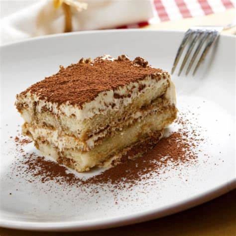

Posted on June 13.2019/ posted in No-Bake Recipes
Tiramisu is a timelees no-bake Italian dessert combining espresso-dipped ladyfingers and a creamy lightlysweetened mascarpone cream.This recipe is from the late Maida Heatter and is easily the best homemade tiramisu recipe that I've ever tried
For those not familiar, Maida Heatter is an icon, especially in the baking world. Dubbed the Queen of Cake, her expansive culinary career included 9 cookbooks, recipes for the Times, a restaurant, and three James Beard Awards. Baker and author Dorie Greenspan once said Whenever someone tells me they want to learn to bake, I tell them to start with Maida Heatter's books. That's what I did.
This latest cookbook is a testament to Maida's legacy. She passed away only 2 months afer this book was published. She leaves behind an incalculable amount of inspirstion to bakers and cooks all over the world.
Dark rum is best, but you can use brandy or your favorite coffee liqueur.
Most tiramisu recipes use whipped egg whites OR whipped cream in the masacarpone cream layers. Egg whites contribute a more airy texture, while whipped cream makes the filling a bit more rich. This recipe actually uses both, so you're getting both delightful textures..
Tiramisu is a no-bake dessert. The egg yolks are gently cooked on the stovetop, but the egg whites are raw. Purchase pasteurized eggs because they are safe to consume raw.
This particular tiramisu recipe yields a large volume and the pan will be very full. Make sure your pan is large enough. I recommend a 9X13 inch dish with at least a 12-14 cup capacity. This 4 quart dish is wonderful too.